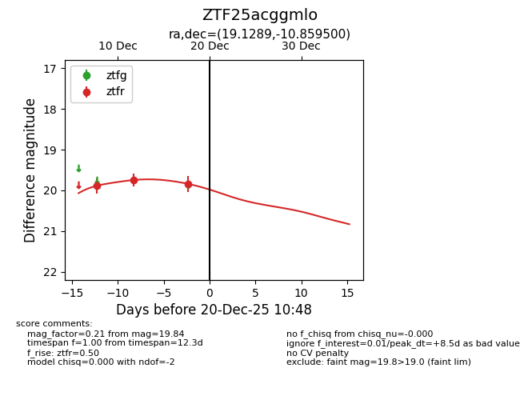
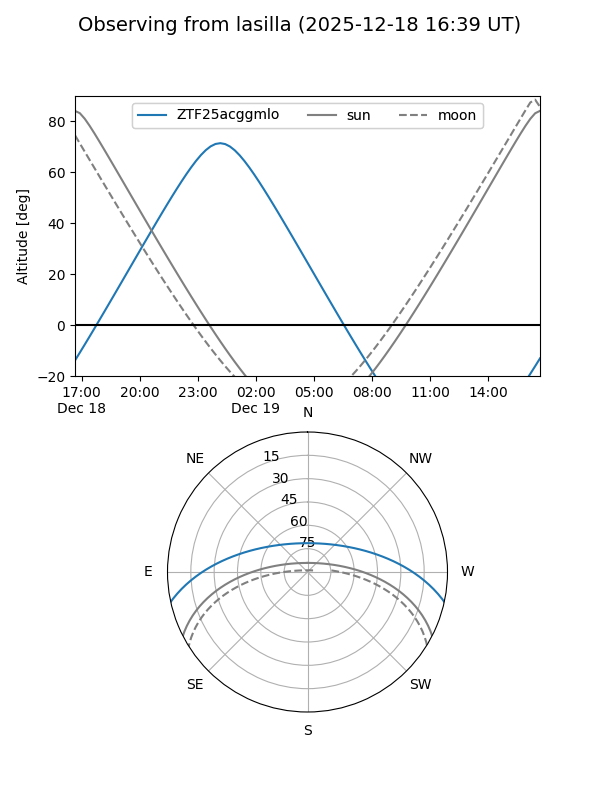
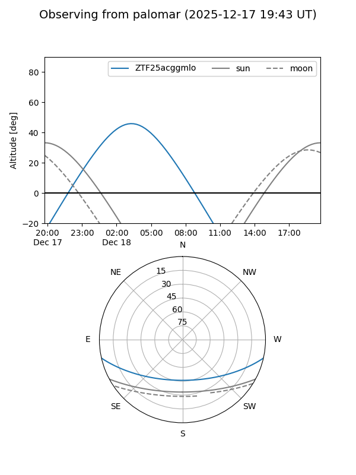
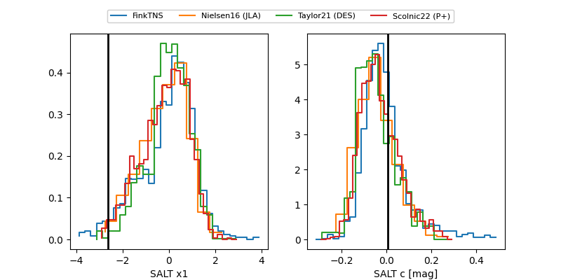

ZTF25acggmlo
Target ZTF25acggmlo at 2025-12-18 10:48
Aliases and brokers:
FINK: fink-portal.org/ZTF25acggmlo
Lasair: lasair-ztf.lsst.ac.uk/objects/ZTF25acggmlo
ALeRCE: alerce.online/object/ZTF25acggmlo
alt names
ZTF25acggmlo (ztf,fink_ztf)
Coordinates:
equatorial (ra, dec) = 19.1289,-10.85950
equatorial (HMS+DMS) = 01:16:30.93,-10:51:34.20
galactic (l, b) = (144.0648,-72.69424)
Photometry
last ztfr=19.84
3 ztfr detections
Lightcurve

Visibility


Additional plots
